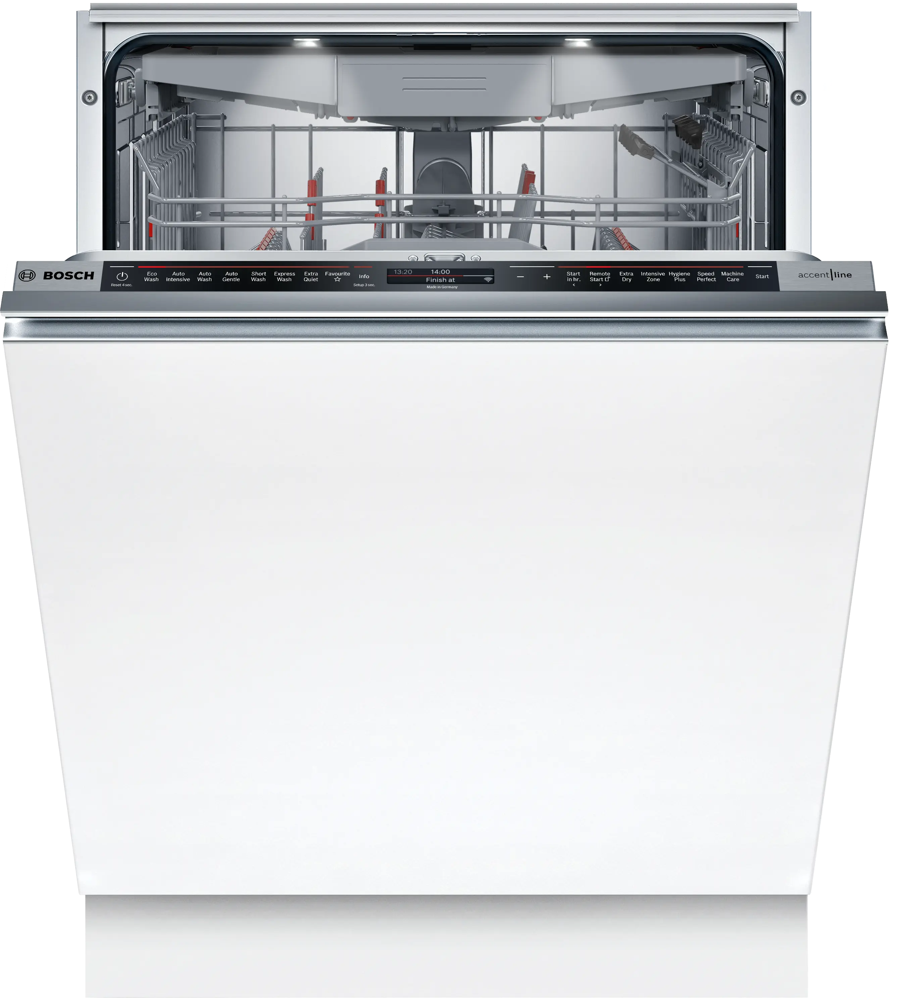

A faulty kitchen appliance can cause immediate household stress. Whether your unit is not draining, leaking pools of water onto your floor, leaving spots on glassware, or completely failing to start — MyFixer provides affordable, same-day dishwasher repairs that save you the cost of an expensive replacement.
Servicing communities throughout Centurion, Pretoria, Johannesburg, Sandton, Randburg, and Roodepoort, our mobile teams carry common plumbing parts and electronic spares directly to your home or business to ensure a prompt turnaround.
Our experienced field technicians troubleshoot complex electrical and water management faults cleanly. We provide comprehensive repair support for premium local models, specializing in Bosch dishwasher repair, Defy servicing, Samsung component replacements, LG, Whirlpool, and Smeg systems.
Unclogging dirty water lines, cleaning filters, and installing high-performance drain pumps.
Replacing damaged door perimeter gaskets, rubber tub seals, and worn intake hoses.
Unblocking spray arms, clearing internal wash filters, and tuning water delivery levels.
Testing latch microswitches, changing burnt wiring setups, and restoring broken main control boards.
Replacing burnt-out flow heaters, heating elements, and broken internal thermostats.
Decoding system alarms, flashing digital controller paths, and addressing sensor faults.